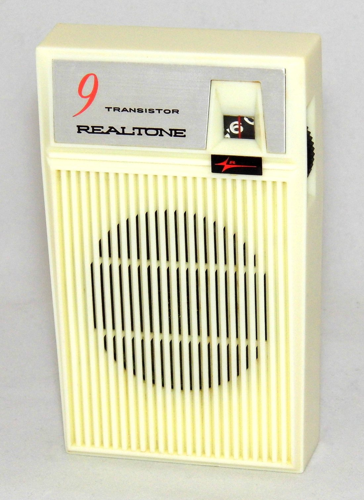

💥 戰爭發生時 · 臨機應變
📻 斷網、斷訊時如何取得資訊與聯絡
戰爭或大型災難中，網路與電話往往是最早癱瘓的系統——基地台停電、線路受損、或訊務瞬間爆量。當你滑不出任何訊息、電話又打不通時，能不能掌握「發生什麼事、該往哪走、家人平不平安」，靠的是事先準備好的低科技手段。這篇教你在斷訊時仍能取得資訊、對外聯絡，並避免被假消息帶著走。

▲ 電池式收音機——不靠網路與基地台，斷訊時最可靠。圖片：Joe Haupt，Wikimedia Commons，授權 CC BY 2.0。
各通訊管道，災時可靠度不一樣
先建立正確預期：不同管道在災難中的存活率差很多。
| 管道 | 災時可靠度 | 說明 |
|---|
| 電池／手搖收音機 | ★★★★★ | 不靠網路與基地台，最後仍能收訊的大眾媒介 |
| 災防告警細胞廣播（PWS） | ★★★★☆ | 政府強制推送、不需網路；但只能收、不能回 |
| 手機簡訊（SMS） | ★★★☆☆ | 壅塞時仍常能延後送達，省電 |
| 語音通話 | ★★☆☆☆ | 最易壅塞、最耗電，留給真正緊急 |
| 行動網路／App | ★☆☆☆☆ | 最先癱瘓；離線功能才靠得住 |
資訊：收音機是斷訊時的王道
- 準備一台電池式或手搖／太陽能收音機，並備妥電池；能收 AM/FM，最好含國家災害示警廣播。
- 不要關閉手機的災防告警（細胞廣播 PWS）——它會在地震、空襲、疏散時強制響鈴通知，且不需網路。
- 官方警報以政府為準：中央氣象署（天氣、地震、海嘯警報）、國防部（空襲）、地方消防與警政單位的疏散指示。
- 把重要的官方廣播頻率、緊急電話抄在紙上放進避難包（見〈緊急避難包清單〉）。
省電：讓手機撐更久
- 一收到災訊就開省電模式、降低亮度、關閉背景 App 與不必要的推播。
- 簡訊優先於通話：省電、壅塞時更易送達。
- 備妥充滿的行動電源、車充、太陽能板；多支手機時，留一支對外聯絡、其餘關機備用（見〈長期停電、停水的生活對策〉）。
導航：離線地圖與紙本備援
- 平時就下載住家周邊、會合點與撤離路線的離線地圖到手機。
- 準備一份紙本地圖與指北針，作為手機沒電時的最終備援。
- 撤離判斷與路線規劃見〈該撤離，還是就地避難？〉。
聯絡：走散了怎麼找到彼此
- 指定一位境外／外縣市聯絡人當「總機」：災區內電話常打不通，打去遠方反而通。每個人一有機會就向他報平安、更新位置。
- 約定會合點（近、遠各一），並讓每人身上帶聯絡卡——完整做法見〈家庭防災計畫與聯絡方式〉。
- 善用社群平台的「報平安（Safety Check）」功能與簡短貼文，一次讓多人知道你安全，省去逐一聯絡。
⚠ 慎防假消息與恐慌
斷訊時最容易滋生謠言。以官方來源為準，對「要你立刻轉發」「來源不明」「異常聳動」的訊息保持懷疑；查看發布時間、多方查證，不轉傳未經證實的內容。假消息會加劇恐慌、誤導撤離，本身就是一種危害。
💡 現在就準備
- 買一台電池／手搖收音機，備妥電池，放進避難包
- 確認手機災防告警功能開啟
- 下載離線地圖＋準備紙本地圖
- 與家人約好境外聯絡人與會合點
怎麼挑一台「用得住」的收音機
收音機是斷訊時的核心裝備，但不是隨便一台都行。挑選時注意：
- 電源多元：最好同時支援電池、手搖發電、太陽能、USB 充電，這樣即使電池用完、長期停電也能持續運作。
- 頻段齊全：至少要能收 AM/FM；能收國家災害示警廣播更佳。
- 附加功能：內建 LED 手電筒、能替手機充電的機型，一機多用、很實用。
- 會用、電池夠：買回來先試轉一次、記住官方電台頻率，並固定備妥對應電池。
把收音機和備用電池一起放進避難包並定期檢查（見〈緊急避難包完整清單〉）。
不同情境，用不同的聯絡策略
- 只是塞爆、還沒斷：改用簡訊或通訊軟體文字訊息，避開語音；訊息寫得短、講重點（我平安／位置／下一步）。
- 行動網路斷、但有 Wi-Fi：善用還能連的 Wi-Fi 傳訊、報平安；反之亦然，兩條路都試。
- 完全斷訊：回到事先約好的會合點，並透過境外聯絡人間接傳話；留字條說明去向與時間。
- 要對很多人報平安：用社群平台的報平安（Safety Check）或一則公開貼文，一次讓親友知道，省去逐一聯絡。
會合點與境外聯絡人的完整設定，見〈家庭防災計畫與聯絡方式〉。
斷訊前，先把這些準備好
- 買好收音機與電池，放進避難包。
- 確認手機災防告警功能開啟；把官方電台頻率、緊急電話、家人與境外聯絡人號碼抄在紙上（手機沒電就靠它）。
- 手機下載離線地圖，另備一份紙本地圖與指北針。
- 行動電源充滿、備妥車充與太陽能板。
- 和家人演練一次：「如果現在完全聯絡不上，我們各自該做什麼？」
幾個常見迷思
- 「有手機就夠了」：手機依賴基地台與電力，是災難中最脆弱的一環。真正靠得住的是收音機、紙本資訊與事先的約定。
- 「一直打電話比較快聯絡上」：反而更慢。壅塞時瘋狂重撥只會加重網路負擔，簡訊一次送出、可延後補達，成功率更高。
- 「消息越多越好」：斷訊時謠言最多。與其追逐大量未證實訊息，不如鎖定少數官方來源，反而更快、更準。
- 「報平安等安頓好再說」：越早報平安越好——趁還能通訊時先發一則，之後就算斷了，家人也知道你起碼在事發時是安全的。
💡 一句話心法
通訊的準備要「降級思考」：假設網路先掛、再假設電話也掛、最後假設手機沒電——每往下降一級，你都要有一個還能用的辦法（軟體訊息 → 簡訊 → 收音機＋紙本＋會合點）。只要每一級都事先鋪好路，斷訊就不會讓你完全失聯。
常見問答 FAQ
Q1. 斷訊時最可靠的資訊來源？
電池／手搖收音機——不靠網路與基地台，能收官方廣播與警報。
Q2. 為何簡訊優先於通話？
簡訊占頻寬小、可延後補送、更省電，壅塞時比通話更易送達。
Q3. 手機強制響鈴的警報是什麼？
災防告警細胞廣播（PWS），政府對區域手機推送的緊急訊息，不需網路，請勿關閉。
Q4. 網路斷了地圖還能用嗎？
能，前提是事先下載離線地圖；並備一份紙本地圖以防手機沒電。
Q5. 怎麼辨識假消息？
以官方為準、多方查證、看發布時間，對聳動與要你轉發的訊息存疑，不轉傳未證實內容。
權威來源
※ 本文為一般防災參考，整理自 NCDR、中央氣象署等公開資訊，不能取代官方即時指示。緊急時請以政府警報與現場人員指揮為準。